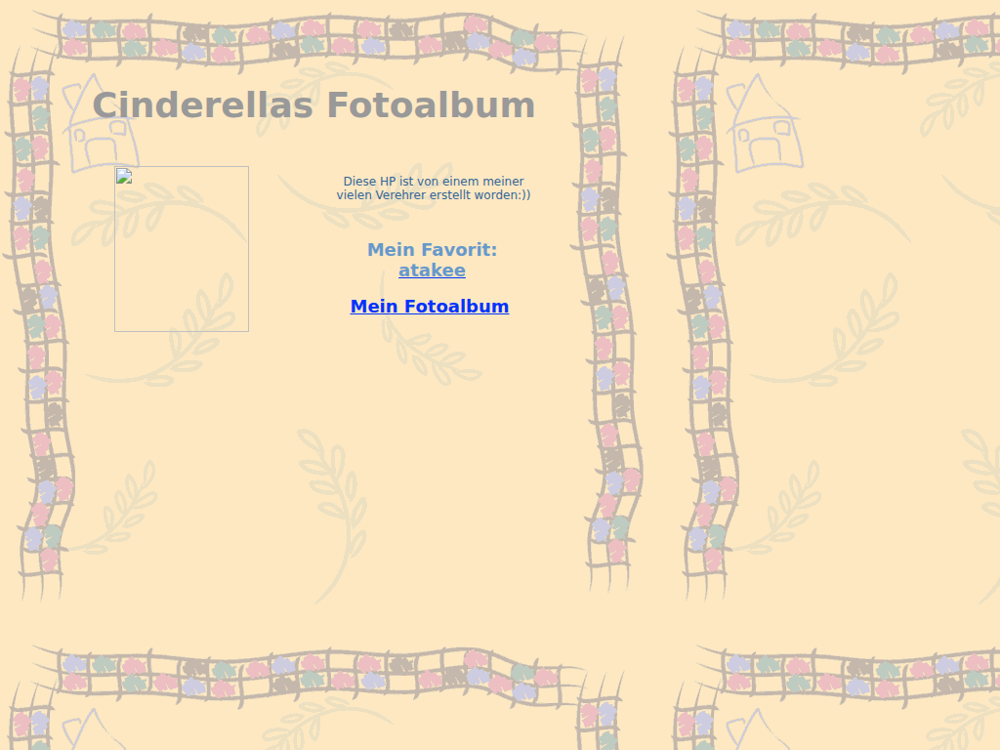

geocities.com/atakee · Yahoo! PageBuilder · de

This is the museum's found object. It surfaced in 2026, during a sweep of the Wayback Machine for the curator's old usernames — a page hosted under his own GeoCities account that he has no memory of making. It is a photo album built for someone, in German, and it speaks in her voice: “Diese HP ist von einem meiner vielen Verehrer erstellt worden :))” — “this homepage was made by one of my many admirers.”
The admirer, the evidence suggests, was the curator: the account is his, and the page's one outbound recommendation — Mein Favorit — points at his own homepage, in its earliest known incarnation on NBCi, before that host died and the site moved to FortuneCity. Who Cindy was, and what the album held, the archive does not say.
2001: GeoCities is Yahoo's now, and pages are assembled in the browser with PageBuilder — pastel clipart templates, spacer GIFs holding the layout together, a guestbook culture where making someone a little homepage was a gift. The free-host era is already past its peak; GeoCities itself would be shut down in 2009.
The page's shared template assets (the country-style background and the PageBuilder spacer GIF) were never captured with the page and were recovered from the archive's separate captures of GeoCities' clipart directory. Yahoo's injected tracking block — which the server itself labeled “PLEASE REMOVE” — was removed, twenty-four years late. What could not be restored: Cindy's photo and the album itself (Mein Fotoalbum) were never archived. The empty frame is displayed as found. Details in the restoration lab.